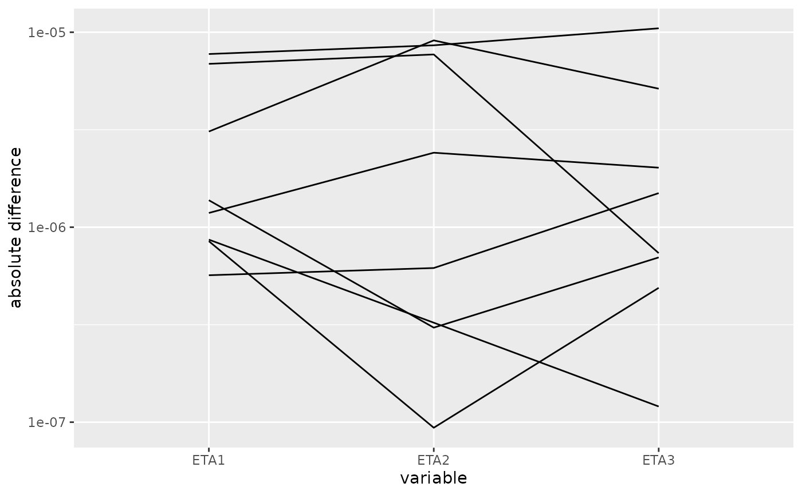
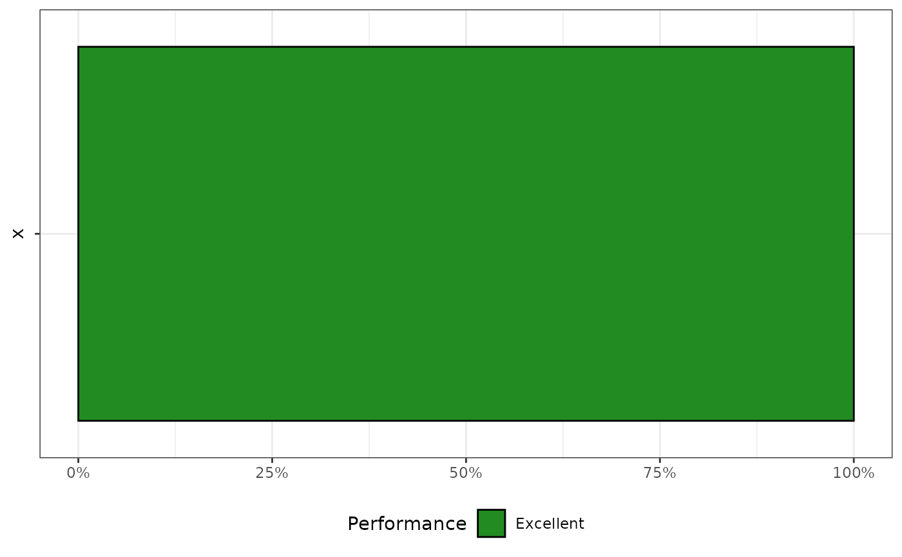
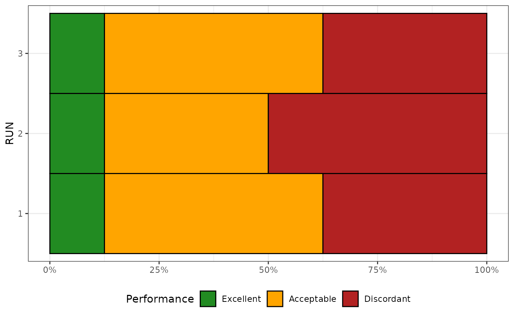

Compare results to NONMEM .phi
Usage
read_nmphi(x)
merge_phi(mapbayr_phi, nonmem_phi)
plot_phi(merged_phi, only_ETA = TRUE)
summarise_phi(
merged_phi,
group,
only_ETA = TRUE,
levels = c(Excellent = 0, Acceptable = 0.001, Discordant = 0.1)
)
bar_phi(summarised_phi, xaxis = NULL, facet = NULL)Arguments
- x
full path to a .phi file generated by NONMEM
- mapbayr_phi
results of mapbayr estimations, in the form of a tibble data.frame, typically obtained from
get_phi()- nonmem_phi
results of NONMEM estimations, in the form of a tibble data.frame, typically obtained from
read_nmphi()- merged_phi
merged results of estimations, typically obtained from
merge_phi()- only_ETA
filter the data with
type=="ETA"(a logical, default isTRUE)- group
one or multiple variables to
group_by()- levels
a named vector of length 3 in order to classify the absolute differences. Default cut-offs are 0.1% and 10% in the parameters space.
- summarised_phi
summarized results of estimations, typically obtained from
summarise_phi()- xaxis
optional. A character value, that correspond to a variable in data, passed to the x-axis to plot multiple bars side-by-side.
- facet
a formula, that will be passed to
ggplot2::facet_wrap()
Value
read_nmphi: a tibble data.frame with a format close to the original .phi file
merge_phi: a long-form tibble data.frame with results of mapbayr and NONMEM
summarise_phi: a summarized tibble data.frame classifying the performance of mapbayr and NONMEM
plot_phi, bar_phi: a
ggplot2object
Details
These functions were made to easily compare the results of mapbayr to NONMEM. For instance, it could be useful in the case of the transposition of a pre-existing NONMEM model into mapbayr. For this, you need to code your model in both mapbayr and NONMEM, and perform the MAP-Bayesian estimation on the same dataset. Ideally, the latter contains a substantial number of patients. NONMEM returns the estimations results into a .phi file.
Use read_nmphi() to parse the NONMEM .phi file into a convenient tibble data.frame with the columns:
SUBJECT_NO,ID: Subject identification.ETA1,ETA2, ...,ETAn: Point estimates of eta.ETC1_1,ETC2_1,ETC2_2, ...,ETCn_n: Variance-covariance matrix of estimation.OBJ: objective function value
Use get_phi() to access to the estimations of mapbayr with the same "phi" format.
Use merge_phi() to combine mapbayr and NONMEM "phi files" into a single long-form data.frame with the columns:
SUBJECT_NO,ID: Subject identification.variablename and itstype: ETA (point estimate), VARIANCE (on-diagonal element of the matrix), COVARIANCE (off-diagonal), and OBJ.mapbayrandnonmem: corresponding valuesadiff: absolute difference betweenmapbayrandnonmemvalues.
Use plot_phi() to graphically represent adiff vs variable. Alternatively, the table returned by merge_phi() is easy to play with in order to derive performance statistics or the graphical plot of your choice.
Use summarise_phi() to classify the estimation as "Excellent", "Acceptable" or "Discordant", over the whole dataset or by group.
Use bar_phi() to graphically represent the proportion of the aforementioned classification as bar plot.
Examples
library(mapbayr)
nmphi <- read_nmphi(system.file("nm001", "run001.phi", package = "mapbayr"))
mapbayrphi <- get_phi(est001)
merged <- merge_phi(mapbayrphi, nmphi)
plot_phi(merged)

summarised <- summarise_phi(merged)
bar_phi(summarised)

# Analyse the results of multiple runs simultaneously
#Example dataset that represents 3 runs
merge3 <- dplyr::bind_rows(merged, merged, merged, .id = "RUN")
merge3$adiff <- 10 ^ runif(nrow(merge3), -8, 0)
summarised3 <- summarise_phi(merge3, group = RUN)
bar_phi(summarised3, xaxis = "RUN")
